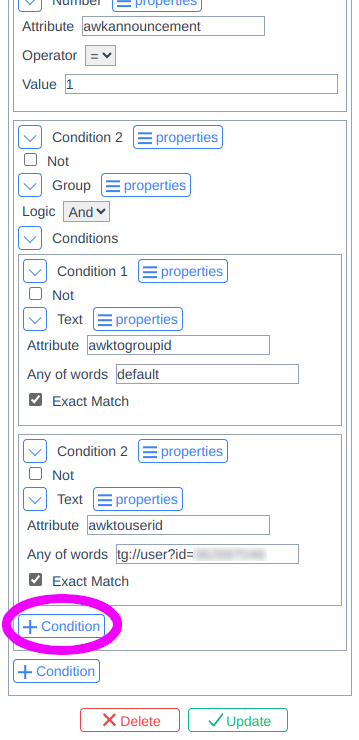

Disable Permits Exhausted Notification
1. Go to own queries list and find the one named "_Reserved_System"
2. Click on the query and scroll down

3. Add the negative ("Not" checked) condition to the end with key "type" equal
to "com.awakari.api.permits.exhausted" (exactly)